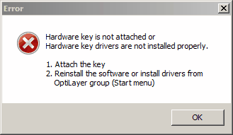
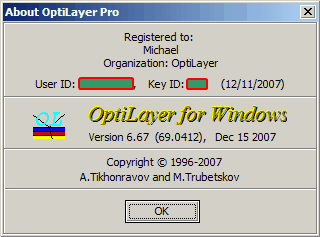

Installation
Installation
|
Before starting the installation please make sure that your system is running Windows with all latest updates installed. It improves security and stability of your system. It also removes possible problems with driver installation that may exist at systems not updated for a long time. |
The hardware key provided with this software, or that was previously provided with other programs in the OptiLayer family, must be connected to the parallel printer port or USB port of your computer in order to utilize the OptiLayer software. This key will not disrupt the printer’s functionality. If the key is not connected, you will receive the following message when trying to initiate the OptiLayer program:

|
Note: OptiLayer and other programs within the OptiLayer family have a new type of security algorithm integrated within them. This feature provides additional user convenience by allowing a specific key to be upgraded for specific versions of the software. It also enables a particular key to be used for different programs within the OptiLayer family. |
image10| |
Important note for USB key users: For the first installation, it is recommended to install the OptiLayer software first and then attach the key only after the installation is complete. This will allow your computer to detect the key automatically. |
The installation procedure for OptiLayer thin film software is similar to that of all other Windows applications. To begin the installation process, insert the CD into the CD-ROM drive (or download the installation file from our website http://www.optilayer.com) and double-click the file
OL_vN.NN.exe
(N.NN corresponds to the current version number, for example, OL_v7.68.exe or OL_v8.17.exe).
In the case of the version downloaded from the Internet, the installation will begin by launching the corresponding EXE file.
The installation procedure will start, and you should follow the step-by-step instructions that appear on the screen.
During the installation process, you will have the option to choose from three types of setup:
·Typical - This option will install the program with the most common settings, including the OptiLayer application files, catalog files, and examples.
·Compact - This option will install the program with the minimum required options, including only the OptiLayer application files.
·Custom - This option allows the user to select the specific components they want to install according to their preferences
To continue with the installation process, follow the prompts provided in the OptiLayer Setup program. You can modify the default Destination Directory by clicking the ‘Browse’ button and selecting your preferred directory. If you have previously utilized the DOS version of OptiLayer, it is worth noting that while it is possible, it is not required to install the Windows version of OptiLayer in the same directory as the DOS version. The Windows version of OptiLayer is capable of working with data files stored in any location.
Notes:
|
Under normal circumstances, the automatic setup process described above should ensure the correct operation of the hardware key. However, in rare cases where non-standard hardware/software configurations or special requirements are present, it may be necessary to configure the drivers. Additional information regarding hardware key drivers can be found on the websites (www.safenet-inc.com (for SafeNet hardware key) or http://www.guardant.com/download/drivers (for Guardant hardware key). |
|
After a successful installation, hardware key driver installers can be found in the OptiLayer group of the Windows Start menu -> All Programs. |
|
We recommend upgrading any version of Windows to the latest available level. This upgrade can improve the overall performance of your system and address potential problems. For more information, you can visit the Microsoft website at www.microsoft.com. Using the Autoupdate feature in Windows is highly recommended. |
 To access the new Advanced Examples, please ensure
that the Examples option is selected during the installation of
the new version. This will enable you to explore and utilize the
new Advanced Examples provided in the software.
To access the new Advanced Examples, please ensure
that the Examples option is selected during the installation of
the new version. This will enable you to explore and utilize the
new Advanced Examples provided in the software.
Important:
You can always check the current version of OptiLayer and important license information, such as User ID and Key ID, in the About box. This information can be found by opening the OptiLayer software and navigating to the About section.

(Licensing information is hidden at this illustration).